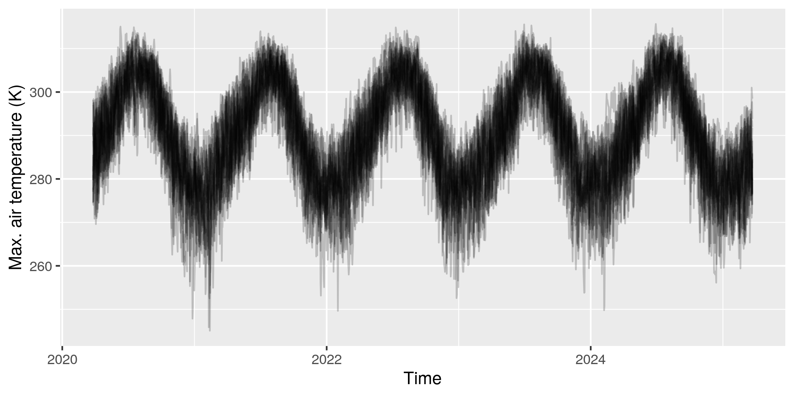
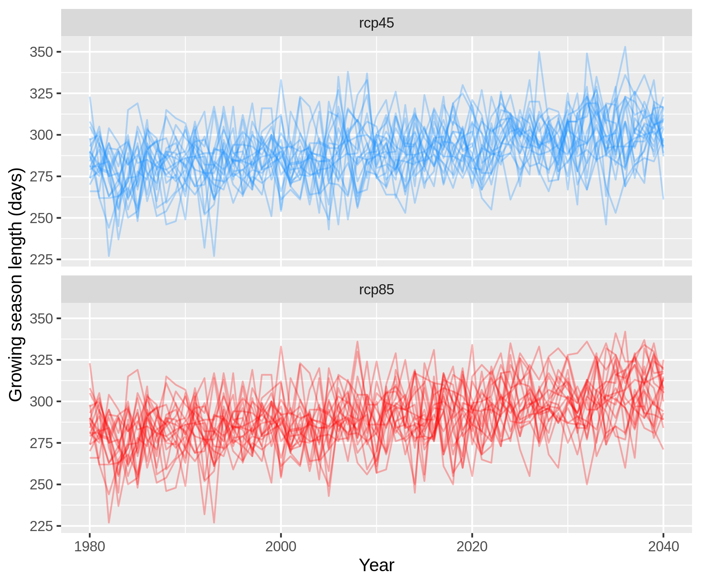

Getting started with the Climate Futures Toolbox
Travis Williams and Max Joseph
2020-04-24
Source:vignettes/cft-intro.Rmd
cft-intro.RmdThis vignette provides a walk-through of a common use case of the cft package: understanding climate futures for a region of interest. We’ll use Wind Cave National Park, located in South Dakota, USA as a case study.
What you’ll learn
This vignette will show you how to:
- Access climate data for a spatial region of interest
- Produce a data.frame containing climate data
- Visualize historical and future data
- Generate and analyze new climate variables
What you’ll need
To get the most out of this vignette, we assume you have:
- At least 500 MB of disk space
- Some familiarity with ggplot2
- Some familiarity with dplyr (e.g.,
filter(),group_by(), andsummarize())
About the data
Global Circulation Models (GCMs) provide estimates of historical and future climate conditions. The complexity of the climate system has lead to a large number GCMs and it is common practice to examine outputs from many different models, treating each as one plausible future.
Most GCMs are spatially coarse (often 1 degree), but downscaling provides finer scale estimates. The cft package uses one downscaled climate model called MACA (Multivariate Adaptive Climate Analog) Version 2 (details here).
Installation
There are a few steps required for the cft package to work:
Install rgdal and ncdf4, which are common R packages used for dealing with gridded data sets. Both of these packages depend on system level libraries who installations depend on the user’s operating system.
Install
cftusing the packageremotesas follows:
# install.packages("remotes") remotes::install_github("earthlab/cft")
- Install Python dependencies. To provide a consistent and relatively quick way to retrieve these datasets from their source, a few Python dependencies are also required. In
cftthese are accessed automatically through thereticulateR package, and you will not need to know any Python, but you will need to have a working installation. We recommend using Conda because it is the simplest way to ensure a functioning installation and it manages dependencies well. First make sure you have conda installed (see instructions here), then you can install the python dependencies with:
cft::install_py_deps()
Acquiring and subsetting data within National Park Service boundaries
This package was originally written with the National Park Service in mind, so it has the option to use the name of any park (or monument, preserve, etc.) within the NPS. Use the cftdata() function to specify a range of years, a set of models, a set of parameters, and a set of representative concentration pathways to return. Leaving these arguments empty will results in a download of all available data for that location.
library(cft) library(tibble) library(ggplot2) library(tidyr) library(lubridate) library(ggrepel) library(dplyr) library(reticulate)
# Choose a project directory to store data # (Leaving this argument empty will download data to a temporary directory) proj_dir <- "~" # download data file_refs <- cftdata(park = "Wind Cave National Park", years = c(1980, 2040), local_dir = proj_dir, parameters = c("tasmin", "tasmax", "uas", "vas", "pr"), ncores = parallel::detectCores()) #> [1] "Retrieving area of interest boundaries..." #> [1] "Building area of interest grid..." #> [1] "Retrieving climate data for wind_cave_national_park" #> [1] "Saving local files to /home/mjoseph/wind_cave_national_park"
The output of cftdata is a data.frame, where each row corresponds to one file:
glimpse(file_refs) #> Rows: 200 #> Columns: 13 #> $ local_file <chr> "tasmin_wind_cave_national_park_bcc-csm1-1_r1i1p1_rcp45_macav2metdata_1980_2040_daily.nc", "t… #> $ local_path <chr> "/home/mjoseph/wind_cave_national_park/tasmin_wind_cave_national_park_bcc-csm1-1_r1i1p1_rcp45… #> $ model <chr> "bcc-csm1-1", "bcc-csm1-1", "bcc-csm1-1", "bcc-csm1-1", "bcc-csm1-1", "bcc-csm1-1", "bcc-csm1… #> $ parameter <chr> "tasmin", "tasmin", "tasmax", "tasmax", "uas", "uas", "vas", "vas", "pr", "pr", "tasmin", "ta… #> $ rcp <chr> "rcp45", "rcp85", "rcp45", "rcp85", "rcp45", "rcp85", "rcp45", "rcp85", "rcp45", "rcp85", "rc… #> $ ensemble <chr> "r1i1p1", "r1i1p1", "r1i1p1", "r1i1p1", "r1i1p1", "r1i1p1", "r1i1p1", "r1i1p1", "r1i1p1", "r1… #> $ year1 <dbl> 1980, 1980, 1980, 1980, 1980, 1980, 1980, 1980, 1980, 1980, 1980, 1980, 1980, 1980, 1980, 198… #> $ year2 <dbl> 2040, 2040, 2040, 2040, 2040, 2040, 2040, 2040, 2040, 2040, 2040, 2040, 2040, 2040, 2040, 204… #> $ area_name <chr> "wind_cave_national_park", "wind_cave_national_park", "wind_cave_national_park", "wind_cave_n… #> $ units <chr> "K", "K", "K", "K", "m s-1", "m s-1", "m s-1", "m s-1", "mm", "mm", "K", "K", "K", "K", "m s-… #> $ full_varname <chr> "Minimum Temperature", "Minimum Temperature", "Maximum Temperature", "Maximum Temperature", "… #> $ internal_varname <chr> "air_temperature", "air_temperature", "air_temperature", "air_temperature", "eastward_wind", … #> $ parameter_long <chr> "air_temperature", "air_temperature", "air_temperature", "air_temperature", "eastward_wind", …
We can generate a data.frame of daily climate values averaged over the study region using the cft_df() function:
df <- cft_df(file_refs, ncores = parallel::detectCores()) #> Computing spatial averages... #> Generating climate data.frame...
Now, we have a tibble where each row represents a day by model by scenario combination, where the climate parameters of interest are represented as columns. Note that, in the output of cft_df(), average values represent all 2km by 2km grid cells that touch the Park boundary:
glimpse(df) #> Rows: 891,240 #> Columns: 10 #> $ rcp <chr> "rcp45", "rcp85", "rcp45", "rcp85", "rcp45", "rcp85", "rcp45", "rcp85", "rcp45", "rcp85", "rcp45", "… #> $ date <date> 1980-01-01, 1980-01-01, 1980-01-01, 1980-01-01, 1980-01-01, 1980-01-01, 1980-01-01, 1980-01-01, 198… #> $ model <chr> "bcc-csm1-1", "bcc-csm1-1", "bcc-csm1-1-m", "bcc-csm1-1-m", "BNU-ESM", "BNU-ESM", "CanESM2", "CanESM… #> $ ensemble <chr> "r1i1p1", "r1i1p1", "r1i1p1", "r1i1p1", "r1i1p1", "r1i1p1", "r1i1p1", "r1i1p1", "r6i1p1", "r6i1p1", … #> $ area_name <chr> "wind_cave_national_park", "wind_cave_national_park", "wind_cave_national_park", "wind_cave_national… #> $ tasmin <dbl> 268.6556, 268.6556, 249.5089, 249.5089, 267.4565, 267.4565, 264.1158, 264.1158, 267.7256, 267.7256, … #> $ tasmax <dbl> 280.0941, 280.0941, 258.7186, 258.7186, 279.6128, 279.6128, 273.8713, 273.8713, 282.7361, 282.7361, … #> $ uas <dbl> 3.04908961, 3.04908961, -1.65185707, -1.65185707, 2.69764333, 2.69764333, 2.99376419, 2.99376419, 3.… #> $ vas <dbl> 1.4561018, 1.4561018, -1.7092865, -1.7092865, -2.1272987, -2.1272987, -0.6530413, -0.6530413, 2.7725… #> $ pr <dbl> 0.0000000, 0.0000000, 1.3649577, 1.3649577, 3.9742251, 3.9742251, 0.0000000, 0.0000000, 0.0000000, 0…
We can work with this data frame to do some basic visualizations, like time series for a particular parameter. For example, we can use the filter() function from dplyr to focus on specific date ranges and specific emissions scenarios.
df %>% filter(date > Sys.Date(), date < Sys.Date() + 365 * 5, # next 5 years rcp == "rcp85") %>% ggplot(aes(date, tasmax, group = model)) + geom_line(alpha = .2) + xlab("Time") + ylab("Max. air temperature (K)")

Computing new daily climate variables
Now that we have all of the climate parameters for our study region, we can compute functions of those variables. For example, it is common to compute the midpoint of the maximum and minimum daily temperature, which we can do using the mutate function:
df <- df %>% mutate(tasmid = (tasmax + tasmin) / 2)
Now we have a new column called tasmid that is the midpoint of the maximum and minumum daily temperature!
Wind speed provides another example of a derived parameter that can be computed for each day. By default, we have two wind-related parameters: the eastward wind component (called uas) and the northward wind component (called vas), both in units of meters per second (you can get this information from cft::argument_reference). Wind speed can be computed from vas and uas using the Pythagorean theorem:
\(\text{Wind speed} = \sqrt{v_{as}^2 + u_{as}^2}.\)
In code:
Computing new climate variable summaries
Sometimes, there are new climate variables that summarize daily data. For example, you may want to compute:
- Last Day of Frost (i.e., last day in spring when min. air temp. < 0 C)
- First Day of Frost (i.e., first day in fall when min. air temp. < 0 C)
- Number of days above or below some threshold (e.g., days with max. air temperature over 40 C, or days with > 1mm of precipitation)
- Growing season length (# days with air temperature > 0 C)
All of these quantities summarize daily data, and require some aggregation time interval which in many cases will be one year. As an example, we will compute the growing season length for Wind Cave National Park across all models and emissions scenarios. To do this, we first need to define a new column for year, which we will use as a grouping variable:
Now, we want to compute growing season length for each year, model, emissions scenario combination.
growing_seasons <- df %>% group_by(rcp, model, year, ensemble) %>% summarize(season_length = sum(tasmid > 273.15)) %>% ungroup
Notice that we used our derived temperature midpoint column tasmid, and computed the total (sum()) number of days for each group where the temperature midpoint was greater than 0 C (or, 273.15 Kelvin, which are the units of the temperature data).
growing_seasons #> # A tibble: 2,440 x 5 #> rcp model year ensemble season_length #> <chr> <chr> <dbl> <chr> <int> #> 1 rcp45 bcc-csm1-1 1980 r1i1p1 284 #> 2 rcp45 bcc-csm1-1 1981 r1i1p1 299 #> 3 rcp45 bcc-csm1-1 1982 r1i1p1 284 #> 4 rcp45 bcc-csm1-1 1983 r1i1p1 272 #> 5 rcp45 bcc-csm1-1 1984 r1i1p1 295 #> 6 rcp45 bcc-csm1-1 1985 r1i1p1 283 #> 7 rcp45 bcc-csm1-1 1986 r1i1p1 285 #> 8 rcp45 bcc-csm1-1 1987 r1i1p1 281 #> 9 rcp45 bcc-csm1-1 1988 r1i1p1 279 #> 10 rcp45 bcc-csm1-1 1989 r1i1p1 272 #> # … with 2,430 more rows
Let’s visualize the growing season over time for each model and emission scenario:
growing_seasons %>% ggplot(aes(year, season_length, color = rcp, group = model)) + geom_line(alpha = .3) + facet_wrap(~rcp, ncol = 1) + xlab("Year") + ylab("Growing season length (days)") + scale_color_manual(values = c("dodgerblue", "red")) + theme(legend.position = "none")

Comparing climate in two time periods
Use the tibble object that is returned from cft_df() as an input to compare_periods() to compare climate between a reference and target period. You may specify the function with which to aggregate your chosen variable as well as the yearly time period months of the year to include in this calculation.
comps <- compare_periods(df, var1 = "pr", var2 = "tasmax", agg_fun = "mean", target_period = c(2020, 2040), reference_period = c(1980, 2000), months1 = 5:8, months2 = 5:8, scenarios = c("rcp45", "rcp85"))
This provides a data frame that can be used to compare the values in the target and reference period.
glimpse(comps) #> Rows: 80 #> Columns: 9 #> Groups: rcp [2] #> $ model <chr> "bcc-csm1-1", "bcc-csm1-1-m", "BNU-ESM", "CanESM2", "CCSM4", "CNRM-CM5", "CSIRO-Mk3-6-0", "GF… #> $ rcp <chr> "rcp45", "rcp45", "rcp45", "rcp45", "rcp45", "rcp45", "rcp45", "rcp45", "rcp45", "rcp45", "rc… #> $ parameter <chr> "pr", "pr", "pr", "pr", "pr", "pr", "pr", "pr", "pr", "pr", "pr", "pr", "pr", "pr", "pr", "pr… #> $ units <chr> "mm", "mm", "mm", "mm", "mm", "mm", "mm", "mm", "mm", "mm", "mm", "mm", "mm", "mm", "mm", "mm… #> $ reference_period <chr> "1980 - 2000", "1980 - 2000", "1980 - 2000", "1980 - 2000", "1980 - 2000", "1980 - 2000", "19… #> $ target_period <chr> "2020 - 2040", "2020 - 2040", "2020 - 2040", "2020 - 2040", "2020 - 2040", "2020 - 2040", "20… #> $ reference_value <dbl> 2.225150, 2.275481, 2.372672, 2.378531, 2.258672, 2.426525, 2.190182, 2.644970, 2.418935, 2.0… #> $ target_value <dbl> 2.289066, 2.083733, 2.528437, 2.321464, 2.356694, 2.132029, 1.905680, 2.779801, 2.501539, 2.6… #> $ difference <dbl> 0.06391522, -0.19174773, 0.15576515, -0.05706760, 0.09802130, -0.29449593, -0.28450203, 0.134…
One useful plot shows the difference in the two variables between reference and target periods:
title <- paste("Change from the historical vs. reference period:", comps$reference_period, comps$target_period, sep= " vs " )[1] comps %>% dplyr::select(parameter, rcp, model, reference_period, target_period, difference) %>% pivot_wider(names_from = parameter, values_from = difference) %>% ungroup %>% mutate(rcp = ifelse(rcp == "rcp45", "RCP 4.5", "RCP 8.5")) %>% ggplot(aes(pr, tasmax, color = rcp)) + ggtitle(title) + geom_point() + geom_hline(yintercept = 0, alpha = .2) + geom_vline(xintercept = 0, alpha = .2) + geom_text_repel(aes(label = model), segment.size = .3, size = 3) + xlab("Difference in mean daily precipitation (mm)") + ylab("Difference in mean daily max. temperature (C)") + scale_color_manual(values = c("dodgerblue", "red"), "Greenhouse gas\ntrajectory")

So, nearly all model runs indicate warming, but the amount of warming varies by model and emissions scenario. Precipitation increases and decreases are predicted by different models.
Finding out which models and parameters are available
The cft package includes a reference object that can tell you what models, scenarios, and climate variables are available. You can use the reference object within to see the available argument options for the cftdata() function: models, parameters, and scenarios (as representative concentration pathways). The labels field will spell out the specific meaning of each parameter, the variables field shows the internal variable name of parameters in the data sets themselves, and the units field shows the measurement unit of each variable.
references <- cft::argument_reference
Here are the GCMs (the models):
references$models #> [1] "bcc-csm1-1" "bcc-csm1-1-m" "BNU-ESM" "CanESM2" "CCSM4" "CNRM-CM5" #> [7] "CSIRO-Mk3-6-0" "GFDL-ESM2M" "GFDL-ESM2G" "HadGEM2-ES365" "HadGEM2-CC365" "inmcm4" #> [13] "IPSL-CM5A-LR" "IPSL-CM5A-MR" "IPSL-CM5B-LR" "MIROC5" "MIROC-ESM" "MIROC-ESM-CHEM" #> [19] "MRI-CGCM3" "NorESM1-M"
Here are the emissions scenarios:
references$scenarios #> [1] "rcp45" "rcp85"
And here are the climate parameters:
references$parameters #> [1] "tasmin" "tasmax" "rhsmin" "rhsmax" "pr" "rsds" "uas" "vas" "huss" "vpd"
Labels for each acronym are also available, for example:
references$labels["vpd"] #> $vpd #> [1] "Vapor Pressure Deficit" references$labels["CCSM4"] #> $CCSM4 #> [1] "Community Climate System Model 4" # For hyphenated acronyms, use them either as objects or with backticks model <- "IPSL-CM5A-MR" references$labels[model] #> $`IPSL-CM5A-MR` #> [1] "Institut Pierre Simon Laplace (IPSL) - Climate Model 5A - Medium Resolution" references$labels$`IPSL-CM5A-MR` #> [1] "Institut Pierre Simon Laplace (IPSL) - Climate Model 5A - Medium Resolution"
Not every model has the same set of parameters available, and the get_args method lists model-specific information.
references$get_args("CCSM4") #> $parameters #> [1] "tasmin" "tasmax" "pr" "rsds" "uas" "vas" "huss" #> #> $scenarios #> [1] "rcp45" "rcp85" #> #> $ensemble #> [1] "r6i1p1"
Why write the cft package?
The amount of data generated by downscaled GCMs can be quite large (e.g., daily data at a few km spatial resolution). The Climate Futures Toolbox was developed to help users access and use smaller subsets.
Data is acquired from the Northwest Knowledge Server of the University of Idaho.